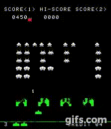
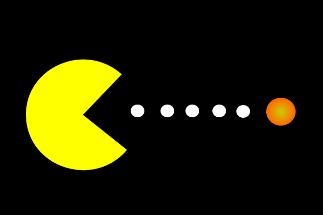

Conceptos Básicos

¿Qué es un Videojuego?
Un videojuego (del inglés video game) o juego de video es un software informático creado para el entretenimiento en general y basado en la interacción entre una o varias personas y un aparato electrónico que ejecuta dicho videojuego; este dispositivo electrónico puede ser una computadora, un sistema arcade, una videoconsola, un dispositivo handheld o un teléfono móvil, los cuales son conocidos como "plataformas". Aunque, usualmente el término "video" en la palabra "videojuego" se refiere en sí a un visualizador de gráficos rasterizados, hoy en día se utiliza para hacer mención de cualquier tipo de visualizador.
Desarrollo
El desarrollo se lleva a cabo por un desarrollador de videojuegos, que puede variar de una persona a un gran negocio. Los videojuegos comerciales para PC y videoconsolas son normalmente financiados por una distribuidora y tardan varios años en desarrollarse. Los videojuegos independientes pueden tomar menos tiempo y pueden ser producidos a bajo precio por individuos y pequeños desarrolladores. La industria de videojuegos independientes ha visto un aumento en los últimos años con el crecimiento de los nuevos sistemas de distribución en línea y el mercado de juegos para móviles.
Los primeros videojuegos fueron desarrollados en la década de 1960, pero requerían grandes ordenadores y no estaban disponibles para el público en general. El desarrollo del videojuego comercial comenzó en 1970 con la llegada de la primera generación de consolas de videojuegos y ordenadores domésticos. Debido a los altos costos y bajas capacidades de las computadoras, un programador solitario podría desarrollar un juego completo.
Proceso

Para que el creador haga esto en el desarrollo de un videojuego generalmente hace el siguiente proceso:
• Concepción de la idea del videojuego
• Diseño
• Planificación
• Producción
• Pruebas
• Mantenimientos
• Funcionalidad
El proceso es similar a la creación de software en general, aunque difiere en la gran cantidad de aportes creativos (música, historia, diseño de personajes, niveles, etc) necesarios. El desarrollo también varía en función de la plataforma objetivo (PC, móviles, consolas), el género (estrategia en tiempo real, RPG, aventura gráfica, plataformas, etc) y la forma de visualización (2D, 2.5D y 3D).